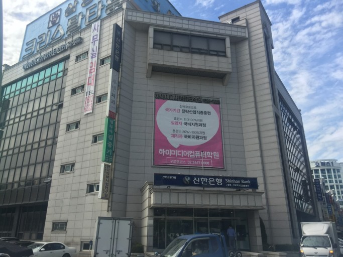

<!DOCTYPE html>
<html lang="ko">
<head>
    <meta charset="UTF-8">
    <meta http-equiv="X-UA-Compatible" content="IE=edge">
    <meta name="viewport" content="width=device-width, initial-scale=1.0">
    <title>하이구로종합복지관</title>
    <!-- 합쳐지고 최소화된 최신 CSS -->
    <link rel="stylesheet" href="https://maxcdn.bootstrapcdn.com/bootstrap/3.3.2/css/bootstrap.min.css">
    <script src="https://code.jquery.com/jquery-3.6.1.min.js"></script>
    <!-- 부가적인 테마 -->
    <link rel="stylesheet" href="https://maxcdn.bootstrapcdn.com/bootstrap/3.3.2/css/bootstrap-theme.min.css">

    <link rel="stylesheet" href="../css/ch2.css">

    <script type="text/javascript" src="../javascript/bootstrap.js"></script>

    <!-- <----------------------------------------------------------------------------------------------> 

    <script type="text/javascript" src="../javascript/ch22.js"></script>

    

    <script src="../javascript/script.js"></script>
</head>
</html>

   
    
</head>
<body>
      
    <div id="page">
 
        <header>
            
            <div class="btlogo"><a href="#">
            </a></div>
           
            
            <div id="top_menu">
                <a href="#">HOME</a> | 
                <a href="#">로그인</a> |
                <a href="#">회원가입</a> |
                <a href="#">후원문의</a>
                
                
                <svg xmlns="http://www.w3.org/2000/svg" viewBox="0 0 512 512" class="bird"><path d="M160.8 96.5c14 17 31 30.9 49.5 42.2c25.9 15.8 53.7 25.9 77.7 31.6V138.8C265.8 108.5 250 71.5 248.6 28c-.4-11.3-7.5-21.5-18.4-24.4c-7.6-2-15.8-.2-21 5.8c-13.3 15.4-32.7 44.6-48.4 87.2zM320 144v30.6l0 0v1.3l0 0 0 32.1c-60.8-5.1-185-43.8-219.3-157.2C97.4 40 87.9 32 76.6 32c-7.9 0-15.3 3.9-18.8 11C46.8 65.9 32 112.1 32 176c0 116.9 80.1 180.5 118.4 202.8L11.8 416.6C6.7 418 2.6 421.8 .9 426.8s-.8 10.6 2.3 14.8C21.7 466.2 77.3 512 160 512c3.6 0 7.2-1.2 10-3.5L245.6 448H320c88.4 0 160-71.6 160-160V128l29.9-44.9c1.3-2 2.1-4.4 2.1-6.8c0-6.8-5.5-12.3-12.3-12.3H400c-44.2 0-80 35.8-80 80zm80 16c-8.8 0-16-7.2-16-16s7.2-16 16-16s16 7.2 16 16s-7.2 16-16 16z" /></svg>
                
            </div>
 
            
            <nav class="mainmenu">
                <ul>
                    <li><a href="#">복지관 소개</a></li>
                    <!-- <ul class="submenu">
                        <a href="#">내용1</a></ul>
                        <a href="#">내용1</a></ul>
                        <a href="#">내용1</a></ul> -->
                    <li><a href="#">알림마당</a></li>
                    <!-- <ul class="submenu">
                        <a href="#">내용1</a></ul>
                        <a href="#">내용1</a></ul>
                        <a href="#">내용1</a></ul> -->
                    <li><a href="#">커뮤니티</a></li>
                    <li><a href="#">봉사활동</a></li>
                    <li><a href="#">이용문의</a></li>
                    <li><a href="#">함께하는 단체들</a></li>
                </ul>
            </nav>
        </header>
      </nav>
        </header>
    <hr class="my-hr1">
<!-- 상단 페이지 끝-->


<hr class="my-hr3">


<br>


</header>
<!-- 상단소개메뉴 -->
<div style="text-align:center; font-size: 19px;">홈 > 복지관 소개 > 찾아오시는 길</div>

<br>

<br>


    </li>
</ul> 
<!-- 지도입니당 -->
<body>
    <div id="map" style="width:100%; height:350px; padding:20px; margin: 0px;"></div>

    <script type="text/javascript" src="//dapi.kakao.com/v2/maps/sdk.js?appkey=514f3364a49f9f5c6be6881e31ff6ade"></script>
    <script>
    var mapContainer = document.getElementById('map'), // 지도를 표시할 div 
        mapOption = { 
            center: new kakao.maps.LatLng(37.50322555401352,126.87896630420589), // 지도의 중심좌표
            level: 1 // 지도의 확대 레벨
        };
    
    var map = new kakao.maps.Map(mapContainer, mapOption); // 지도를 생성합니다
    
    // 마커가 표시될 위치입니다 
    var markerPosition  = new kakao.maps.LatLng(37.50322555401352,126.87896630420589); 
    
    // 마커를 생성합니다
    var marker = new kakao.maps.Marker({
        position: markerPosition
    });
    
    // 마커가 지도 위에 표시되도록 설정합니다
    marker.setMap(map);
    
    // 아래 코드는 지도 위의 마커를 제거하는 코드입니다
    // marker.setMap(null);    

    window.addEventListener('resize',function(){
          map.setCenter(new kakao.maps.LatLng(37.50322555401352,126.87896630420589));
                });
    


    </script>

    <div class="bigmap">
    <a href="https://map.kakao.com/?urlX=473250&urlY=1112170&urlLevel=3&map_type=TYPE_MAP&map_hybrid=false">▶지도 확대 및 길찾기 기능 이용하기◀</a>  </div>
<br>
    
   <br>
   
    <div class="outimg">
        ◀ 복지관 외부 사진▶
    </div>


    </body>
    
    
    
        <!-- 찾아오는길 시작 -->
<br>
<p class="bus" style= "padding-left: 20px;"> 대중교통에 의한 전동휠체어 이용시</p>
<div class="text" style= "padding-left: 20px;">1호선 구로역 1번출구 하차 후 약 10분
구로역 (NC백화점) 구로9번, 5630버스 하차 후 약 10분 <br><br></div>
<p class="subway"  style= "padding-left: 20px;">대중교통 이용에 의한 도보시</p>
<div class="text" style= "padding-left: 20px;">1호선 구로역(NC백화점) 하차후 마을버스09 탑승. 구로역,구로기계상가 정류장 하차</div>
<br>
<br>
<div class="call"  style= "padding-left: 20px;">
주소 : 서울특별시 구로구 경인로 557 신한은행 건물 4층<br>
    팩스 070-8455-5768  이메일 chaei9803@naver.com <br>
문의시간 : 월~금(9:00~18:00)
</div>
</p>
<!-- 찾아오는길 끝 -->
    
</div>
<hr class="my-hr2">

 
      
        <footer style="padding-left: 20px; padding-right: 20px; padding-bottom: 20px;">
            <div class="btlogo"><a href="#">
                
            </a></div>
            <div class="site">
               
                <div class="btmenu">
                    <ul>
                        함께하는 사이트
                        <li><a href="#">구로구청</a></li>
                        <li><a href="#">구로장애인복지관</a></li>
                        <li><a href="#">구로노인복지관</a></li>
                        <li><a href="#">구로청소년시설</a></li>
                    </ul>
                     <br>
                </div>
                <div class="copy">
                    주소: 서울시 구로구  대표: 조채이 <br>
                    전화: 010-8455-5768   이메일: chaei9803@naver.com <br>COPYRIGHT &copy; by WEBDESIGN. ALL RIGHTS RESERVED</div>
            </div>
        </footer>
    
        <script src="../javascript/jquery-3.3.1.js"></script>
    
        <!-- 합쳐지고 최소화된 최신 자바스크립트 -->
       
    
</body>
</html>
